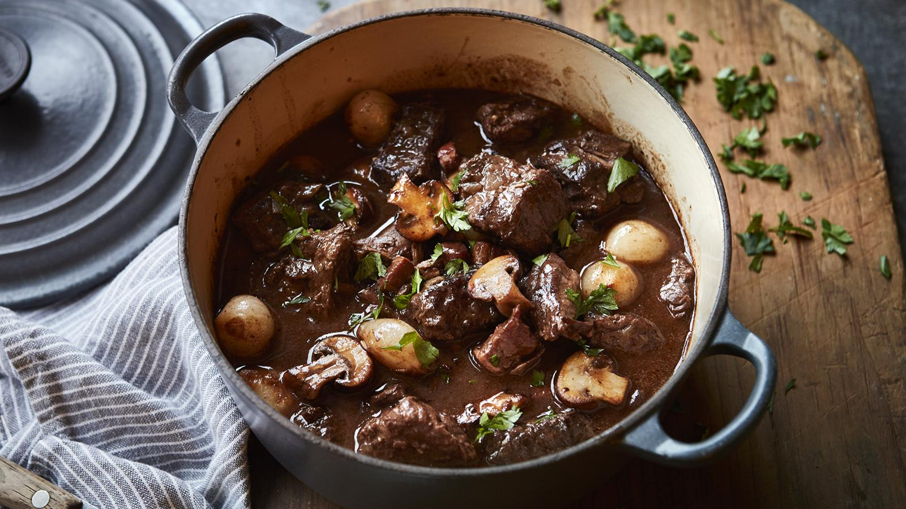

Beef Bourguignon is a classic French stew where beef is slowly braised in red wine with carrots, onions, mushrooms, and bacon. This hearty dish from Burgundy transforms tough cuts of meat into tender, flavorful morsels through slow cooking. The rich sauce, infused with herbs and aromatics, makes it the ultimate comfort food and a showcase of traditional French cooking techniques.
Ingredients
- 3 pounds beef chuck, cut into 2-inch cubes
- 8 ounces bacon, diced
- 2 large onions, sliced
- 3 carrots, sliced
- 4 cloves garlic, minced
- 1 bottle (750ml) dry red wine (preferably Burgundy)
- 2 cups beef stock
- 1 tablespoon tomato paste
- 1 bouquet garni (thyme, parsley, bay leaf)
- 1 pound mushrooms, quartered
- 20 pearl onions, peeled
- 3 tablespoons butter
- 3 tablespoons all-purpose flour
- 1/4 cup brandy (optional)
- Fresh parsley, chopped, for garnish
- Salt and freshly ground black pepper
Preparation
This iconic French dish requires time and patience, but the result is well worth the effort. The slow braising process allows the flavors to meld together, creating a rich, complex sauce and incredibly tender meat. Traditionally served with crusty bread, mashed potatoes, or buttered noodles.
Chef's Tips
- For the best flavor, marinate the beef in the wine overnight.
- Use a good quality wine that you would enjoy drinking.
- Pat the beef dry before browning for the best sear.
- The stew tastes even better the next day after the flavors have had time to develop.